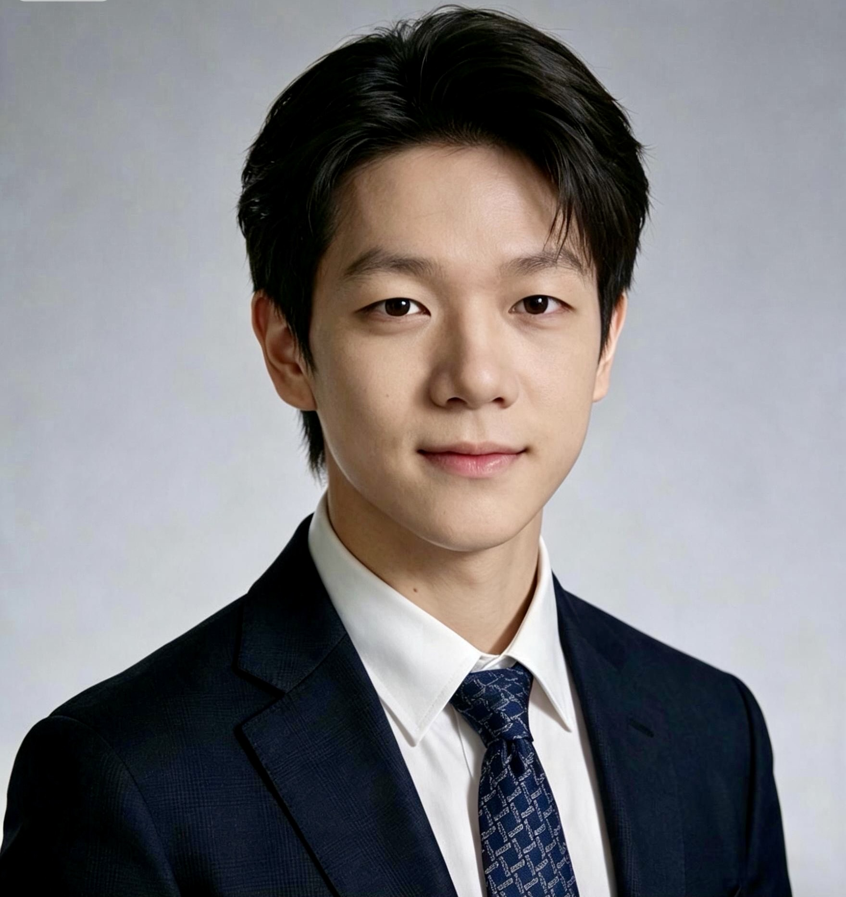

Passionate about economics, finance, and lifelong learning, I strive to combine analytical thinking with creativity. Whether studying financial markets, leading student organizations, or exploring new opportunities, I enjoy challenging myself and continuously developing both academically and personally.
Get In Touch
I am a junior at Suzhou North America High School with a growing passion for economics, finance, and the global stock market. I enjoy understanding how businesses operate, how financial decisions create value, and how economic principles shape the world around us. To gain practical experience beyond the classroom, I have invested approximately 10,000 RMB in several mutual funds, including funds tracking the Nasdaq-100 and the S&P 500. This hands-on experience has strengthened my curiosity about investing, risk management, and long-term financial planning.
Outside academics, music has always been an important part of my life. Playing the piano and singing allow me to express creativity, stay balanced, and recharge after studying. I believe that combining analytical thinking with artistic expression helps me approach challenges from different perspectives. Looking ahead, I hope to continue expanding my knowledge, developing leadership skills, and preparing myself for future opportunities in business, finance, and technology.
I enjoy learning about investing and financial markets through both independent research and practical experience. Managing my own mutual fund investments has strengthened my ability to analyze market trends, understand long-term investment strategies, and make thoughtful financial decisions.
Singing and piano have helped me develop discipline, creativity, and confidence. Music provides an important balance to my academic interests and allows me to express myself while continuously improving through practice.
Playing golf has taught me patience, concentration, and perseverance. The sport has strengthened my ability to stay calm under pressure while emphasizing consistency, precision, and continuous self-improvement.
I actively pursue opportunities that combine leadership, business, and academic excellence. My achievements include earning the National Silver Prize in the National Economics Challenge (NEC), where I strengthened my understanding of economics while working collaboratively in a competitive environment. The experience enhanced both my analytical thinking and problem-solving abilities.
In addition, I serve as the President of a BPA-certified Business Fundamentals Club. In this leadership role, I organize activities, encourage collaboration among members, and promote interest in business education. Leading the club has improved my communication, organization, and teamwork skills while giving me valuable experience managing projects and inspiring others toward shared goals.
I would be happy to connect regarding academic opportunities, competitions, leadership experiences, or shared interests in finance, economics, and technology.
📧 zaizaiying3@gmail.com